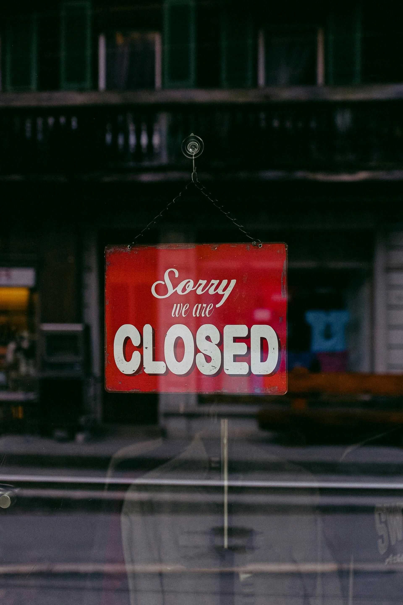

Winkels op zondag
Veel toeristen denken dat alle winkels op zondag gesloten zijn. Dat is niet zo.
Alleen “reguliere” winkels (elektronica, witgoed, non-toeristisch) zijn dicht. In het centrum en toeristische gebieden zijn de meeste souvenirshops, kledingwinkels en vakantiewinkels gewoon open.